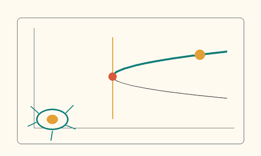
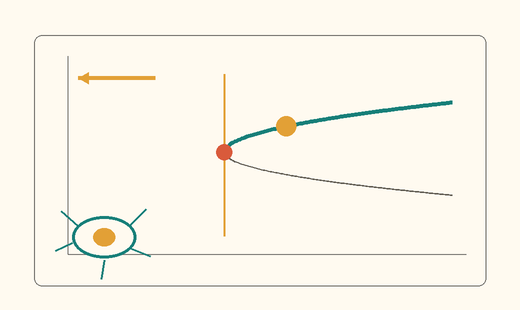
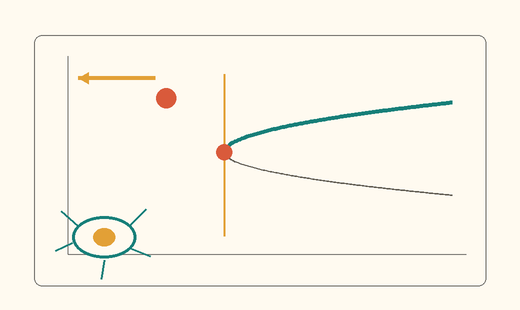
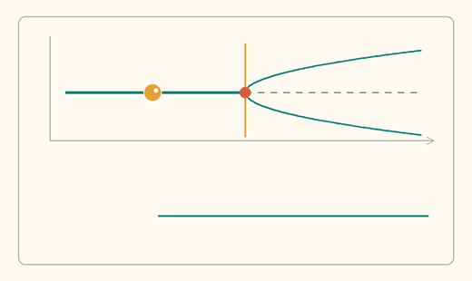
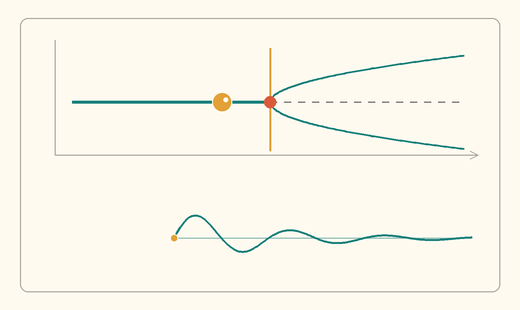
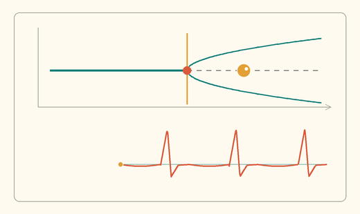
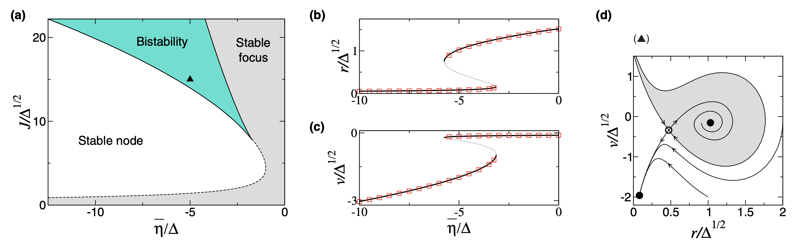
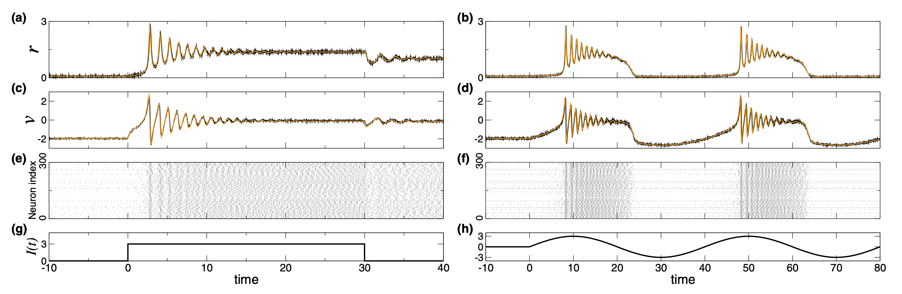
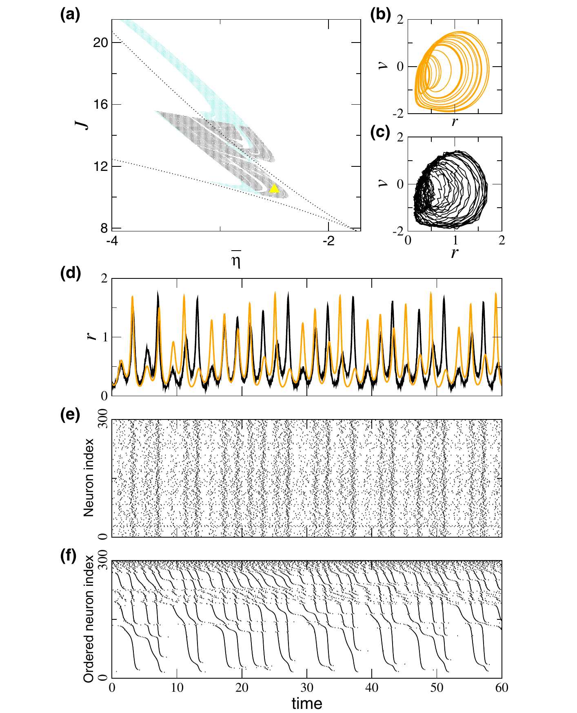

A major goal of neuroscience, statistical physics, and nonlinear
dynamics is to understand how brain function arises from the
collective dynamics of networks of spiking neurons. This challenge
has been chiefly addressed through large-scale numerical
simulations. Alternatively, researchers have formulated mean-field
theories to gain insight into macroscopic states of large neuronal
networks in terms of the collective firing activity of the neurons,
or the firing rate. However, these theories have not succeeded in
establishing an exact correspondence between the firing rate of the
network and the underlying microscopic descriptions, particularly
when trying to describe neuronal synchronization. Here, we provide
the derivation of a set of exact macroscopic equations for a network
of spiking neurons. Our results reveal that the spike generation
mechanism of individual neurons introduces an effective coupling
between two biophysically relevant macroscopic quantities, the
firing rate and the mean membrane potential, which together govern
the evolution of the neuronal network. The resulting equations
exactly describe all possible macroscopic dynamical states of the
network, including states of synchronous spiking activity. Finally,
we show that the firing-rate description is related, via a
conformal map, to a low-dimensional description in terms of the
Kuramoto order parameter, called Ott-Antonsen theory. We anticipate that our
results will be an important tool in investigating how large
networks of spiking neurons self-organize in time to process and
encode information in the brain.
The processing and coding of information in the brain necessarily
imply the coordinated activity of large ensembles of neurons. Within
sensory regions of the cortex, many cells show similar responses to
a given stimulus, indicating a high degree of neuronal redundancy at
the local level. This suggests that information is encoded in the
population response and, hence, can be captured via macroscopic
measures of the network activity [1].
Moreover, the collective behavior of large neuronal networks is
particularly relevant given that current brain measurement
techniques, such as electroencephalography or functional magnetic
resonance imaging, provide data that are necessarily averaged over
the activity of a large number of neurons.
The macroscopic dynamics of neuronal ensembles has been extensively
studied through computational models of large networks of
recurrently coupled spiking neurons, including Hodgkin-Huxley-type
conductance-based neurons [2], as well as simplified neuron models;
see, e.g., Refs. [3–5]. In parallel, researchers have sought to
develop statistical descriptions of neuronal networks, mainly in
terms of a macroscopic observable that measures the mean rate at
which neurons emit spikes, the firing rate [6–20]. These
descriptions, called firing-rate equations (FREs), have been proven
to be extremely useful in understanding general computational
principles underlying functions such as memory [21,22], visual
processing [23–25], motor control [26], or decision making [27].
Despite these efforts, to date there is no exact theory linking the
dynamics of a large network of spiking neurons with that of the
firing rate. Specifically, current macroscopic descriptions do not
offer a precise correspondence between the microscopic dynamics of
the individual neurons, e.g., individual membrane potentials, and
the firing-rate dynamics of the neuronal network.
Indeed, FREs are generally derived through heuristic arguments that
rely on the underlying spiking activity of the neurons being
asynchronous and hence uncorrelated. As such, firing-rate
descriptions are not sufficient to describe network states involving
some degree of spike synchronization. Synchronization is, however, a
ubiquitous phenomenon in the brain, and its potential role in
neuronal computation is the subject of intense research [14,28–34].
Hence, the lack of firing-rate descriptions for synchronous states
limits the range of applicability of mean-field theories to
investigate neuronal dynamics.
Here, we propose a method to derive the FREs for networks of
heterogeneous, all-to-all coupled quadratic integrate-and-fire (QIF)
neurons, which is exact in the thermodynamic limit, i.e., for large
numbers of neurons. We consider an ansatz for the distribution of
the neurons’ membrane potentials that we denominate the Lorentzian
ansatz (LA). The LA solves the corresponding continuity equation
exactly, making the system amenable to theoretical analysis.
Specifically, for particular distributions of the heterogeneity, the
LA yields a system of two ordinary differential equations for the
firing rate and mean membrane potential of the neuronal population.
These equations fully describe the macroscopic states of the
network—including synchronized states, and represent the first
example of an exact firing-rate description for a network of
recurrently connected spiking neurons. Finally, we show how the LA
transforms, via a conformal mapping, into the so-called
Ott-Antonsen ansatz (OA) that is used extensively to investigate the
low-dimensional dynamics of large populations of phase oscillators
in terms of the Kuramoto order parameter [35].
Hodgkin-Huxley-type neuronal models can be broadly classified into
two classes, according to the nature of their transition to spiking
in response to an injected current [36,37]. Neuronal models with
so-called class I excitability generate action potentials with
arbitrarily low frequency, depending on the strength of the applied
current. This occurs when a resting state disappears through a
saddle-node bifurcation. In contrast, in neurons with class II
excitability, the action potentials are generated with a finite
frequency. This occurs when the resting state loses stability via a
Hopf bifurcation. The QIF neuron is the canonical model for class I
neurons, and, thus, generically describes their dynamics near the
spiking threshold [5,38,39]. Our aim here is to derive the FREs
corresponding to a heterogeneous all-to-all coupled population of
𝑁 QIF neurons. The correspondence is exact in the thermodynamic
limit, i.e., when 𝑁 →∞ (this convergence was studied recently in
Ref. [40]).
Extra
Class Isubthreshold relaxation: no spike

The state returns to stable rest. This relaxation is not a voltage oscillation or a spike.
Class Ia spark crosses the threshold
Crossing the unstable threshold sends the voltage through one spike; it then resets.
Class I + small currentthe stable state is closer to threshold

Current narrows the gap; the mechanism is unchanged, but a smaller push now crosses the threshold.
Class I + beyond thresholdrest and threshold have disappeared

With no resting state left, the voltage repeatedly escapes, spikes, and resets. The slow bottleneck allows an onset near 0 Hz.
Class IIat rest before Hopf

At the exact resting state, nothing oscillates and the voltage remains constant.
Class IIperturbed before Hopf

These are genuine voltage oscillations, but they are small and decay, so they never reach the spiking excursion.
Class II + after Hopfself-sustained finite-frequency firing

Rest is now unstable: the sustained cycle includes a spike on every turn and begins at a nonzero frequency.
The microscopic state of the population of QIF neurons is given
by the membrane potentials
{Vj}j=1,…,N,
which obey the following ordinary differential equations [5]:
V̇j = Vj² + Ij, if Vj ≥ Vp, then Vj ← Vr.
(1)
Here, the overdot denotes the time derivative and
Ij
represents an input current. Each time a neuron’s membrane
potential Vj
reaches the peak value Vp,
the neuron emits a spike and its voltage is reset to the value
Vr. In our analysis,
we consider the limit
Vp = −Vr → ∞.
This resetting rule captures
the spike reset as well as the refractoriness of the neuron.
Without loss of generality, we rescale the time and the voltage
in Eq. (1) to absorb any coefficients that would have appeared
in the first two terms.
The form for the input currents is
Ij = ηj + Js(t) + I(t),
(2)
where the external input has a heterogeneous, quenched component
ηj as well as a
common time-varying component
I(t), and the recurrent
input is the synaptic weight J
times the mean synaptic activation
s(t), which is written as
s(t) = (1/N) Σj Σk ∫ aτ(t−t′) δ(t′−tkj) dt′.
(3)
Here, tkj is the time
of the kth spike
of the jth neuron,
δ(t) is the Dirac
delta function, and aτ(t)
is the normalized synaptic activation caused by a single presynaptic
spike with time scale τ,
e.g., aτ(t) = e−t/τ/τ.
A. Continuous formulation
In the thermodynamic limit
N → ∞, we
drop the indices in Eqs. (1) and (2) and denote
ρ(V|η,t)dV
as the fraction of neurons with membrane potentials between
V and
V + dV and parameter
η, at time
t. Accordingly,
parameter η now
becomes a continuous random variable distributed according to a
probability distribution function
g(η). The total
voltage density at time t
is then given by
∫ρ(V|η,t)g(η)dη.
The conservation of the number of neurons leads to the following continuity equation:
∂tρ + ∂V[(V² + η + Js + I)ρ] = 0,
(4)
where we explicitly include the velocity given by Eqs. (1) and (2).
The continuity equation (4) without temporal forcing
I(t) = 0 has a
trivial stationary solution. For each value of
η, this solution has
the form of a Lorentzian function:
ρ₀(V|η) ∝ (V² + η + Js)⁻¹.
Physically, the Lorentzian density means that firing neurons with
the same η value will
be scattered with a density inversely proportional to their speed
[Eq. (1)]; i.e., they will accumulate at slow places and thin out
at fast places on the V
axis. In addition, for those η
values corresponding to quiescent neurons, the density
ρ₀ collapses at the
rest state in the form of a Dirac delta function.
Next, we assume that, independently of the initial condition,
solutions of Eq. (4) generically converge to a Lorentzian-shaped
function, so that all relevant dynamics occur inside that
lower-dimensional space. This fact is mathematically expressed by
the following LA for the conditional density functions:
which is a Lorentzian function with time-dependent half-width
x(η,t) and center
at y(η,t). In the
following, we assume that the LA Eq. (5) completely describes the
macroscopic dynamics of the network of QIF neurons and postpone the
mathematical justification of its validity to Sec. III E.
A. Macroscopic observables: Firing rate and mean membrane potential
The half-width x(η,t)
of the LA has a particularly simple relation with the firing rate
of the neuronal population (i.e., the number of spikes per unit
time). Indeed, the firing rate for each
η value at time
t,
r(η,t), can be
computed by noting that neurons fire at a rate given by the
probability flux at infinity:
r(η,t) = ρ(V → ∞|η,t)V̇(V → ∞|η,t).
The limit V → ∞
on the right-hand side of this equation can be evaluated within
the LA, and gives the simple identity
x(η,t) = πr(η,t).(6)
The (total) firing rate r(t) is then
r(t) = (1/π) ∫ x(η,t)g(η)dη.(7)
Additionally, the quantity
y(η,t) is, for
each value of η, the
mean of the membrane potential:
y(η,t) = p.v. ∫ ρ(V|η,t)VdV.(8)
Here, we take the Cauchy principal value, defined as
p.v. ∫ f(x)dx = lim ∫ f(x)dx,
to avoid the otherwise ill-defined integral. The mean membrane
potential is then
v(t) = ∫ y(η,t)g(η)dη.(9)
B. Firing-rate equations
Substituting the LA Eq. (5) into the continuity equation (4), we
find that, for each value of
η, variables
x and
y must obey two coupled
equations, which can be written in complex form as
∂ₜw(η,t) = i[η + Js(t) − w(η,t)² + I(t)],(10)
where w(η,t) ≡ x(η,t) + iy(η,t).
Closing this equation requires expressing the mean synaptic
activation s(t) as
a function of w(η,t).
The simplest choice is to take the limit of infinitely fast
synapses, τ → 0
in Eq. (3), so that we get an equality with the firing rate
s(t) = r(t).
This allows for the system of QIF neurons [Eqs. (1)–(3)] to be
exactly described by Eqs. (10) and (7), an infinite set of
integro-differential equations if
g(η) is a
continuous distribution.
Equation (10) is useful for general distributions
g(η) (see
Appendix B), but a particularly sharp reduction in dimensionality
is achieved if η is
distributed according to a Lorentzian distribution of half-width
Δ centered at
η̄:
g(η) = (1/π) Δ / ((η − η̄)² + Δ²).(11)
Note that this distribution accounts for the quenched variability
in the external inputs. The fact that it is Lorentzian is unrelated
to the LA for the density of membrane potentials.
Assuming Eq. (11), the integrals in Eqs. (7) and (9) can be
evaluated by closing the integration contour in the complex
η plane and using
the residue theorem [41]. Notably, the firing rate and the mean
membrane potential only depend on the value of
w at the pole of
g(η) in the
lower half of the complex
η plane:
πr(t) + iv(t) = w(η̄ − iΔ,t).
As a result, we only need to evaluate Eq. (10) at
η = η̄ − iΔ,
and thereby obtain a system of FREs composed of two ordinary
differential equations:
ṙ = Δ/π + 2rv,(12a)
v̇ = v² + η̄ + Jr + I(t) − π²r².(12b)
This nonlinear system describes the macroscopic dynamics of the
population of QIF neurons in terms of the population firing rate
r and mean membrane
potential v.
It is enlightening to compare the mean-field model Eq. (12) with
the equations of the spiking neurons. Note that Eq. (12b)
resembles Eqs. (1) and (2) for the individual QIF neuron, but
without spike resetting. Indeed, the macroscopic firing-rate
variable r enters as
the negative feedback term
−π²r² in
Eq. (12b), impeding the explosive growth of the mean membrane
potential v.
This negative feedback, combined with the coupling term
2rv on the
right-hand side of Eq. (12a), describes the effective interaction
between the firing rate and mean membrane potential at the
network level. Therefore, the FREs (12) describe the effect of
the single-cell spike-generation and reset mechanism at the
network level.
In the following, we examine the dynamics described by Eq. (12)
and show that they fully reproduce the macroscopic dynamics of
the network of QIF neurons, even during episodes of strong spike
synchrony.
C. Analysis of the firing-rate equations
To begin with the analysis of Eq. (12), we first note that in the
absence of forcing,
I(t) = 0, the only
attractors of Eq. (12) are fixed points. Figure 1(a) shows a phase
diagram of the system as a function of the mean external drive
η̄ and synaptic
weight J, both
normalized by the width of the input distribution [42]. There are
three qualitatively distinct regions of the phase diagram:
(1) a single stable node corresponding to a low-activity state
(white), (2) a single stable focus (spiral) generally
corresponding to a high-activity state (gray), and (3) a region
of bistability between low and high firing rate [cyan; see a
phase portrait of this region in Fig. 1(d)]. Comparison of a
sample bifurcation diagram of the fixed points from numerical
simulations of networks of QIF neurons with that obtained from
the FREs (12) shows an excellent correspondence; see Figs. 1(b)
and 1(c).

Analysis of the steady states of FREs (12).(a) Phase diagram: In the wedge-shaped cyan-shaded region there is bistability between a high- and a low-activity state. The boundary of the bistability region is the locus of a saddle-node bifurcation, which is exactly obtained in parametric form:
(η̄,J)SN = [−π²r² − 3Δ²/(2πr)², 2π²r + Δ²/(2π²r³)].
To the right of the dashed line, defined by
η̄f = −[J/(2π)]² − (πΔ/J)²,
there is a stable focus (shaded regions).
(b)r − η̄ and (c)v − η̄ bifurcation diagrams for J/Δ¹ᐟ² = 15. Square symbols show results obtained from numerical simulations of QIF neurons (see Appendix A for details).(d) Phase portrait in the bistable region [η̄/Δ = −5, J/Δ¹ᐟ² = 15, triangle in (a)] with three fixed points: a stable focus (with its basin of attraction shaded), a stable node, and a saddle point.
A similar phase diagram can be readily reproduced by traditional
heuristic firing-rate models, with one significant qualitative
difference: the presence of a stable focus—and hence, damped
oscillations. Specifically, in the gray region of the phase
diagram in Fig. 1(a), the system undergoes oscillatory decay to
the stable fixed point. This oscillatory decay also occurs for
the high-activity state over a large part of the bistability
region (cyan); see, for example, Fig. 1(d).
The presence of damped oscillations at the macroscopic level
reflects the transient synchronous firing of a fraction of the
neurons in the ensemble. This behavior is common in spiking
neuron models with weak noise and is not captured by traditional
firing-rate models (see, e.g., Ref. [20]).
D. Analysis of the firing-rate equations: Nonstationary inputs
To show that the FREs (12) fully describe the macroscopic
response of the population of QIF neurons to time-varying
stimuli—up to finite-size effects—we consider two types of
stimulus I(t):
(1) a step function and (2) a sinusoidal forcing. In both cases,
we simulate the full system of QIF neurons and the FREs (12).
Figure 2 shows the system’s response to the two different inputs.
In both cases, the system is initially
(t < 0) in a
bistable regime and set in the low-activity state, with parameters
corresponding to those of Fig. 1(d). The left-hand panels of
Fig. 2 show the response of the system to a step current applied
at t = 0. The
applied current is such that the system abandons the bistable
region—see Fig. 1(a)—and approaches the high-activity state,
which is a stable focus. This is clearly reflected in the time
series r(t), v(t),
where the rate equations (12) exactly predict the damped
oscillations exhibited by the mean field of the QIF neurons. The
raster plot in Fig. 2(e) shows the presence of the oscillations,
which is due to the transitory synchronous firing of a large
fraction of neurons in the population. Finally, at
t = 30, the
current is removed and the system converges—again showing damped
oscillations—to the new location of the focus fixed point, which
clearly coexists with the stable node where it was originally
placed (t < 0).

The transient dynamics of an ensemble of QIF model neurons [Eqs. (1) and (2)] are exactly described by the FREs (12).(a),(b) Instantaneous firing rate and (c),(d) mean membrane potential of the QIF neurons and the FREs are depicted in black and orange, respectively. (e),(f) Raster plots of 300 randomly selected QIF neurons from the N = 10⁴ neurons in the ensemble. (a),(c),(e),(g) At time t = 0, a current I = 3 is applied to all neurons and set to zero again at t = 30; the stimulus I(t) is shown in (g). (b),(d),(f),(h) At time t = 0, a sinusoidal current is applied to all neurons, I(t) = I₀ sin(ωt), with I₀ = 3 and ω = π/20; the stimulus I(t) is shown in (h). Parameters: J = 15, η̄ = −5, and Δ = 1.
The right-hand panels of Fig. 2 show the response of the model to
a periodic current, which drives the system from one side of the
bistable region to the other. As a result, we observe periodic
bursting behavior when the system visits the stable-focus region
of the phase diagram, Fig. 1(a).
To further illustrate the potential of the FREs (12) to predict
and investigate complex dynamics in ensembles of spiking neurons,
we present here a simple situation where the system of QIF neurons
exhibits macroscopic chaos. This is observed by increasing the
frequency ω of
the sinusoidal driving, so that the system cannot trivially follow
the stable fixed point at each cycle of the applied current.
Figure 3(a) shows a phase diagram obtained using Eq. (12). The
shaded regions indicate parameter values where the rate model has
either a single chaotic attractor (in black) or a chaotic
attractor coexisting with a periodic orbit (in cyan). A trajectory
on the chaotic attractor is depicted in Fig. 3(b), and the clearly
irregular time series of the firing rate is shown in orange in
Fig. 3(d). Using the same parameters, we perform numerical
simulations of the QIF neurons [Eqs. (1) and (2)], finding a
similar attractor and irregular dynamics as in the rate model; see
Figs. 3(c) and 3(d). To obtain the time series shown in Fig. 3(d),
we run the QIF neurons numerically and, after a long transient, at
time t = 0, the
rate model Eq. (12) is initiated with the values of
r and
v obtained from the
population of QIF neurons. The time series of the two systems,
which are initially close, rapidly diverge, reflecting the chaotic
nature of the system.

Firing-rate model predicts the existence of macroscopic chaos in ensemble QIF neurons [Eq. (1)] with an injected periodic current I(t) = I₀ sin(ωt).(a) Phase diagram with the regions where chaos is found, obtained using the rate model Eq. (12). In the black-shaded region, there is only one chaotic attractor, whereas in the cyan region the chaotic attractor coexists with a periodic attractor. Dotted lines correspond to the bistability boundary of Fig. 1(a), depicted to facilitate comparison. (b) Chaotic trajectory obtained by simulating the FREs (12); the Lyapunov exponent is λ = 0.183…. (c) Chaotic trajectory obtained from the QIF neurons—parameters corresponding to the yellow triangle symbol in (a). (d) Time series for the rate model (orange) and QIF model (black). (e) Raster plot corresponding to 300 randomly selected neurons. (f) Same raster plot as in (e), ordering neurons according to their intrinsic current ηₖ. Parameters: I₀ = 3, ω = π, η̄ = −2.5, and J = 10.5 [triangle symbol in (a)].
Finally, to illustrate this chaotic state at the microscopic
level, Fig. 3(e) shows the raster plot for 300 randomly chosen
neurons, corresponding to the time series in Fig. 3(d). The
irregular firing of neurons in Fig. 3(e) has some underlying
structure that may be visualized by ordering the same set of
neurons according to their intrinsic currents as
ηₖ < ηₖ₊₁,
with k ∈ [1,300];
see Fig. 3(f). Clearly, the maxima of the firing rate coincide
with the synchronous firings of clusters of neurons with similar
η values. The size
of these clusters is highly irregular in time, in concomitance
with the chaotic behavior.
Original paper
Macroscopic Description for Networks of Spiking Neurons
Read the complete article used throughout this visual
explanation.